Kutnohorsko · Léta Páně 1403
Tahová hra na hrdiny ze středověkých Čech. Vyraz na stezky, kde za každým ohybem číhá lapka, v podzemí se skrývají truhly a na konci cesty čeká pán místa.
Kým budeš
Každý původ hraje jinou roli. Schopnosti získáváš na úrovních 1, 4, 8 a 12 — a v družině se navzájem doplníte.
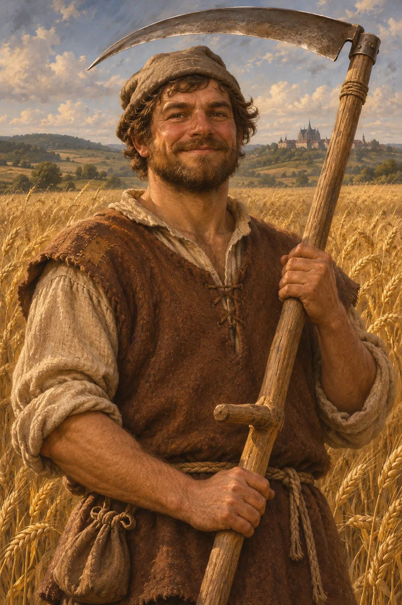
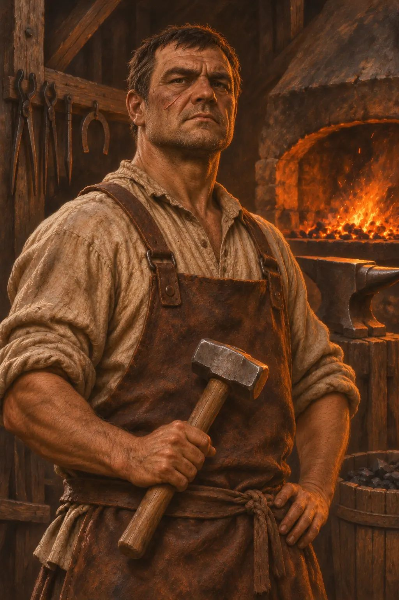
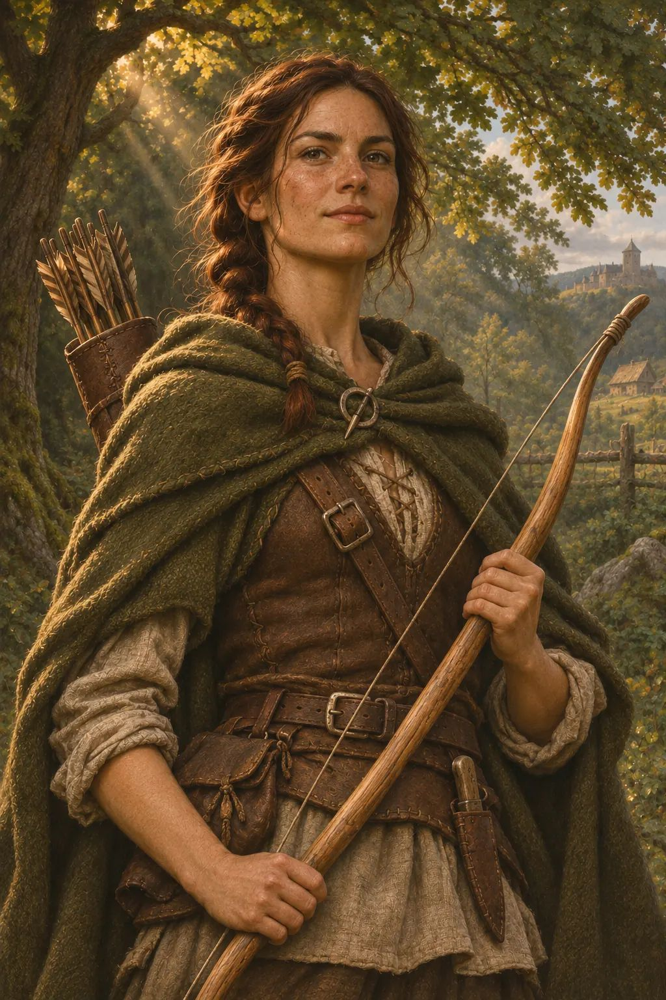
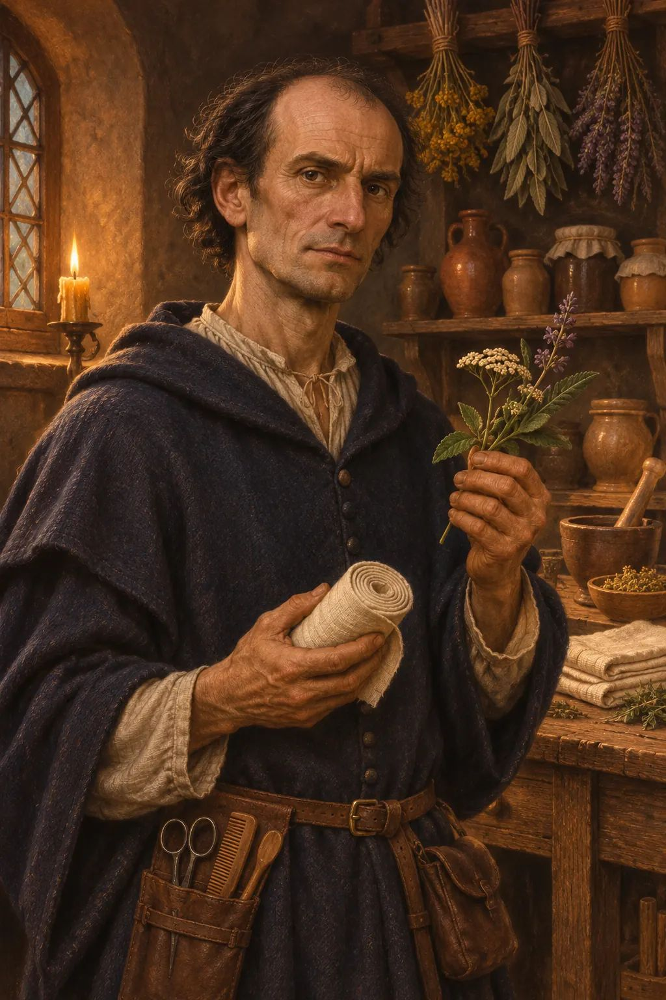
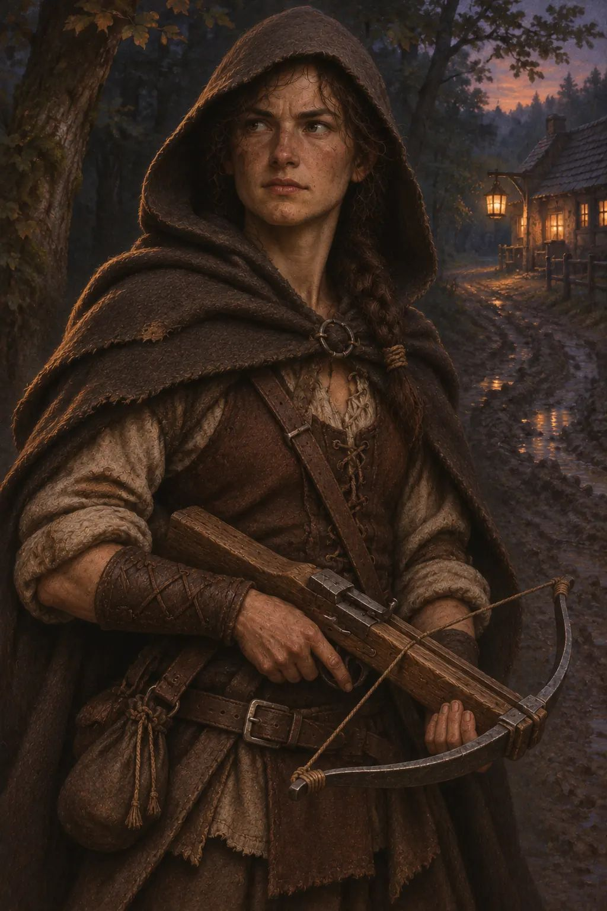
Výpravy
Vyraz sám, nebo s družinou až čtyř přátel. Ratajské lesy, kutnohorské štoly, kostnice v Sedlci a Posázaví, kde cestu otevírají jen hádanky a rébusy.
Na mapě tě čekají truhly, pasti, poutníci i zálohy. Kdo dojde až k pánovi místa, může odnést legendární kořist.
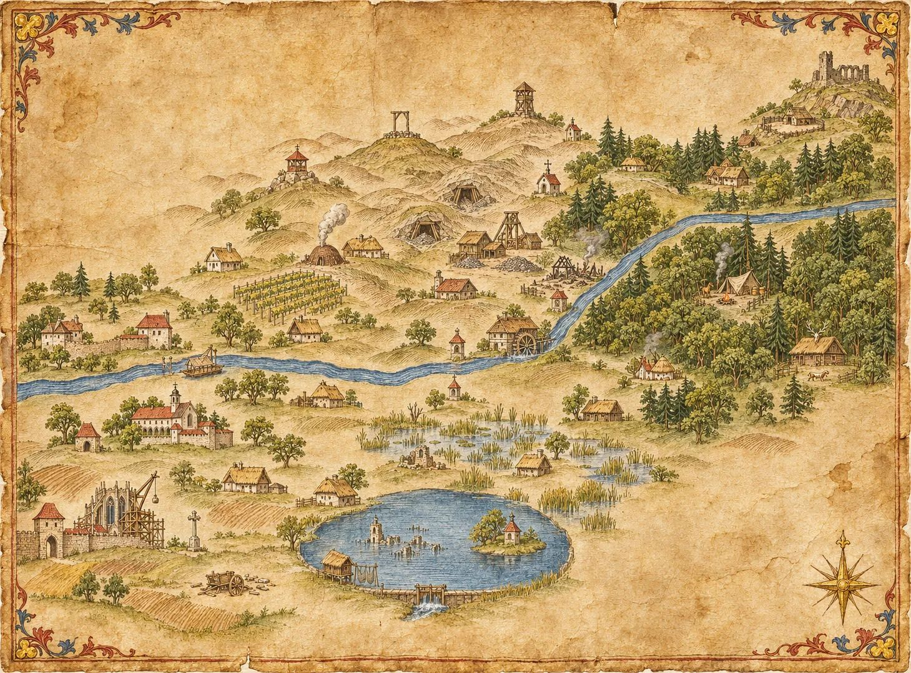
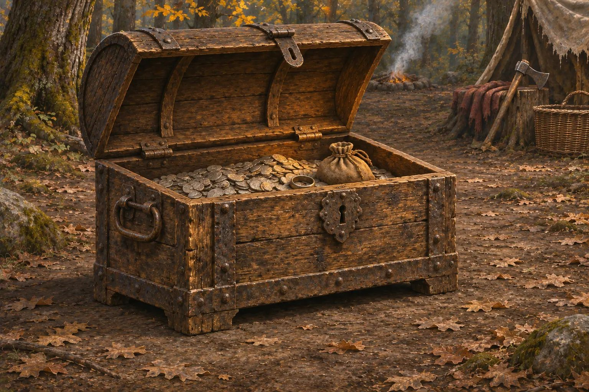
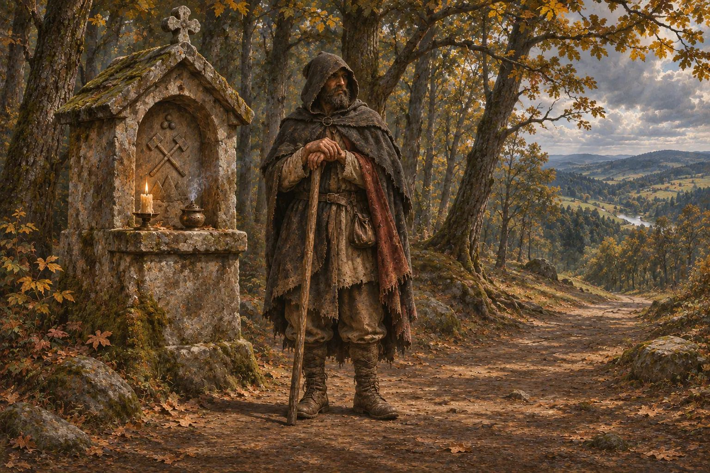
Boj
Nepřítel dává najevo, co chystá — ale umí i fintovat. Útoč, kryj se, uhni, nebo počkej na protiútok. Každý tah stojí výdrž a zbroj tlumí rány.
Páni míst mají drtivé údery, řvou na smečku a zuří, když jim dochází síly. Žoldnéřský hejtman nečeká, až budeš připraven.
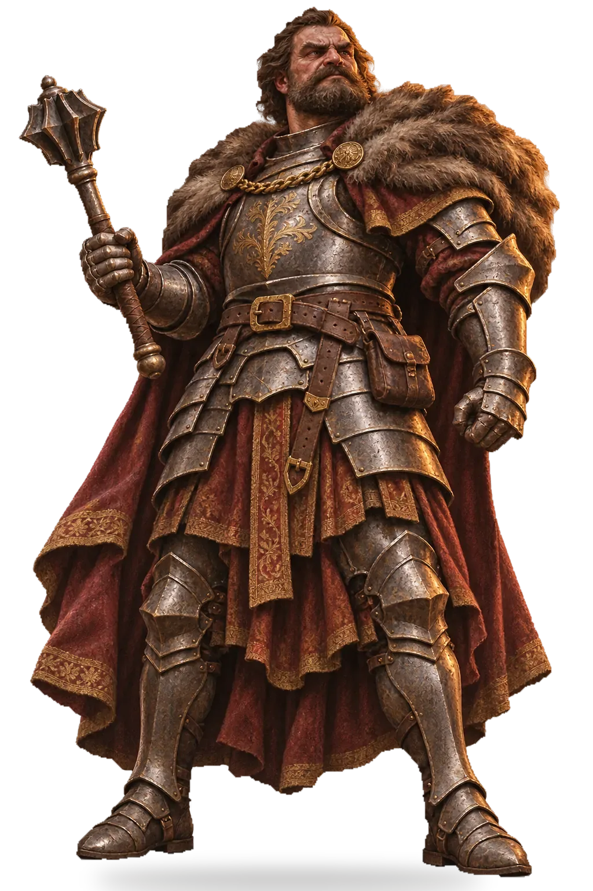
Město
Město žije i bez tebe — a s ostatními hráči v něm potkáš vždycky někoho, s kým se dá hrát, obchodovat nebo poměřit síly.
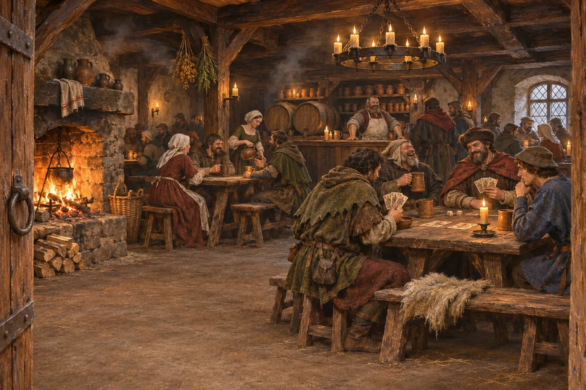
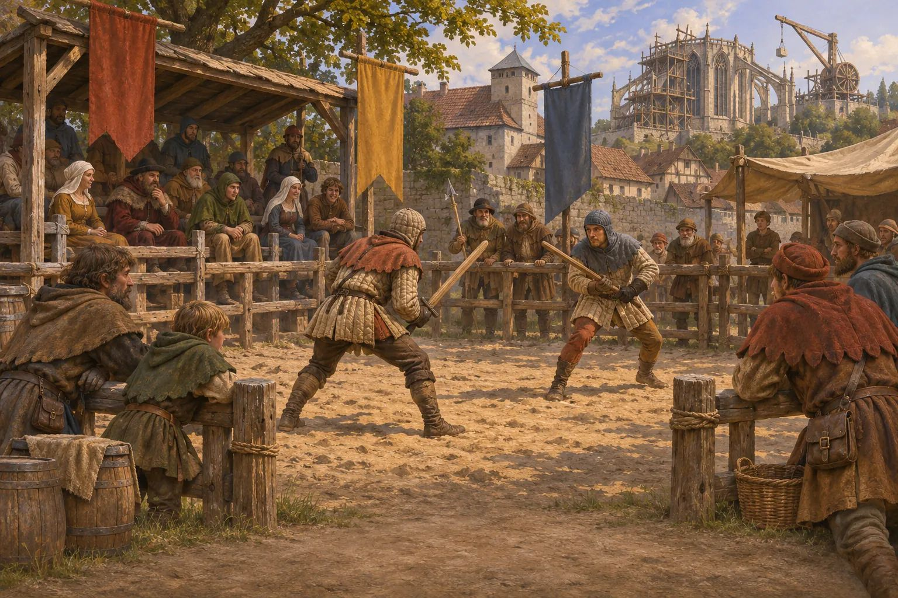
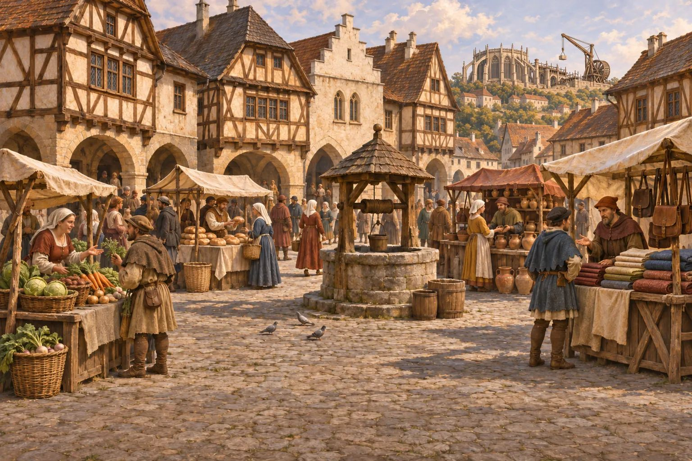
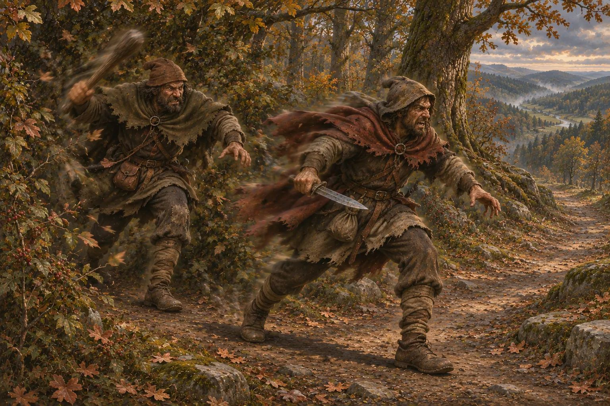
Na stezkách
Jiní hráči se můžou vydat po tvých stopách — přepadnout tě, obchodovat, nebo se jen minout. Kdo padne, nechá na místě tělo i část věcí. Najde ho zachránce, nebo zloděj?
Kdo přepadá a krade, je hledaný a rychtář vypíše odměnu za jeho hlavu.